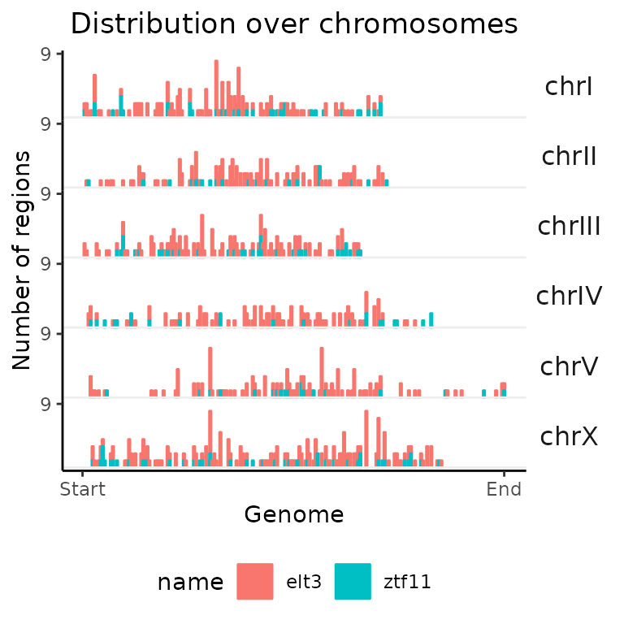

GenomicDistributions demo
Kristyna Kupkova1
Source:vignettes/GenomicDistributions_vignette.Rmd
GenomicDistributions_vignette.RmdFast, Easy, And Flexible Summary And Visualization Of Genomic Regions
Authors: Kristyna Kupkova2, Jose Verdezoto Mosquera3, Jason P. Smith4, Michał
Stolarczyk5, Tessa L. Danehy6, John T. Lawson7, Bingjie
Xue8,
John T. Stubbs, IV9, Nathan LeRoy10, Nathan C.
Sheffield11.
Last modified: 19 July, 2022.
Overview
Description
During this workshop participants will be introduced to GenomicDistributions package. At first, we will go over a general introduction to GenomicDistributions, where we will learn about the purpose, design, and advantages of GenomicDistributions. Followed by instructor-led demo, we will go through all of the functions included in GenomicDistributions, where participants will be able to try the functions on provided example datasets. The participants will learn, how to calculate and plot summary statistics extracted from the example datasets and how to further customize plots generated with GenomicDistributions. Some of the GenomicDistributions functions require genome annotations (for hg19, hg38, and mm10 these are all included in the GenomicDistributionsData package and passed to a subset of functions ending with the suffix “Ref”), the participants will be taught how to easily create and use these annotations. At the end of the workshop, all participants will be able to extract following summary statistics about their regions of interest: distribution over chromosomes, distances from genomic features (e.g., TSSs), distribution over annotation classes, signal summary in regions, region widths, distances to the nearest neighbor, GC content, and dinucleotide frequencies.
Pre-requisites
Helpful but not required:
- Basic knowledge of R syntax
- Familiarity with the GenomicRanges class
Anyone interested in getting familiar with GenomicDistributions before the workshop is welcome to that that by reading the GenomicDistributions publication or vignettes provided with the package:
Participation
Participants will be able to test all of the functions provided in GenomicDistributions on example datasets, learn how to customize plots and create genome annotations required by some of the functions.
Learning goals
- calculate and plot summary statistics about genomic regions
- create genome annotations from FASTA and GTF files
Learning objectives
During the workshop the participants will learn how to get following information about regions of interest:
- distribution over chromosomes
- distances from genomic features (e.g., TSSs)
- distribution over annotation classes
- signal summary in regions
- region widths
- distances to the nearest neighbor
- GC content
- dinucleotide frequencies
Participants will also learn how to:
- create custom annotation files
- customize plots
A. Load data
Let’s first load our example region sets (BED files - hg38 genome assembly) as GRanges / GRangesList objects.
library("GenomicDistributionsBioC2022")
# provide full path to genomic regions of interest (BED files)
H3K27ac_Bcell_file = system.file("extdata", "hg38_H3K27ac_Bcell.bed.gz",
package="GenomicDistributionsBioC2022")
H3K27me3_Bcell_file = system.file("extdata", "hg38_H3K27me3_Bcell.bed.gz",
package="GenomicDistributionsBioC2022")
FGF2_iPSC_file = system.file("extdata", "hg38_FGF2_iPSC.bed.gz",
package="GenomicDistributionsBioC2022")
# import bed files as GenomicRange objects
H3K27ac_Bcell = rtracklayer::import(H3K27ac_Bcell_file)
H3K27me3_Bcell = rtracklayer::import(H3K27me3_Bcell_file)
FGF2_iPSC = rtracklayer::import(FGF2_iPSC_file)
# remove unknown chromosomes:
H3K27ac_Bcell = keepStandardChromosomes(H3K27ac_Bcell,pruning.mode="coarse")
H3K27me3_Bcell = keepStandardChromosomes(H3K27me3_Bcell,pruning.mode="coarse")
FGF2_iPSC = keepStandardChromosomes(FGF2_iPSC,pruning.mode="coarse")We now have our individual datasets in form of a GRanges objects. Let’s have a look.
head(FGF2_iPSC)
#> GRanges object with 6 ranges and 0 metadata columns:
#> seqnames ranges strand
#> <Rle> <IRanges> <Rle>
#> [1] chr1 629777-630122 *
#> [2] chr1 633847-634215 *
#> [3] chr1 778575-778853 *
#> [4] chr1 827332-827648 *
#> [5] chr1 921142-921392 *
#> [6] chr1 940207-940475 *
#> -------
#> seqinfo: 24 sequences from an unspecified genome; no seqlengthsTo enable comparison of multiple region sets we need to combine the individual GRanges objects into a GRangesList.
GRList = GRangesList(H3K27ac_Bcell=H3K27ac_Bcell,
H3K27me3_Bcell=H3K27me3_Bcell,
FGF2_iPSC=FGF2_iPSC)
GRList
#> GRangesList object of length 3:
#> $H3K27ac_Bcell
#> GRanges object with 58033 ranges and 0 metadata columns:
#> seqnames ranges strand
#> <Rle> <IRanges> <Rle>
#> [1] chr1 1000310-1000753 *
#> [2] chr1 100037011-100040452 *
#> [3] chr1 100040882-100041361 *
#> [4] chr1 100046295-100047961 *
#> [5] chr1 100048276-100048828 *
#> ... ... ... ...
#> [58029] chrX 97563113-97564372 *
#> [58030] chrX 97564422-97564749 *
#> [58031] chrX 989528-991924 *
#> [58032] chrX 9953085-9953661 *
#> [58033] chrX 9980613-9982237 *
#> -------
#> seqinfo: 24 sequences from an unspecified genome; no seqlengths
#>
#> $H3K27me3_Bcell
#> GRanges object with 51085 ranges and 0 metadata columns:
#> seqnames ranges strand
#> <Rle> <IRanges> <Rle>
#> [1] chr1 1000432-1000779 *
#> [2] chr1 1000882-1001645 *
#> [3] chr1 1002104-1002649 *
#> [4] chr1 1002885-1005766 *
#> [5] chr1 100336992-100337457 *
#> ... ... ... ...
#> [51081] chrY 2830500-2830755 *
#> [51082] chrY 2834328-2834614 *
#> [51083] chrY 2899471-2899699 *
#> [51084] chrY 7712260-7712492 *
#> [51085] chrY 8417617-8417831 *
#> -------
#> seqinfo: 24 sequences from an unspecified genome; no seqlengths
#>
#> $FGF2_iPSC
#> GRanges object with 9974 ranges and 0 metadata columns:
#> seqnames ranges strand
#> <Rle> <IRanges> <Rle>
#> [1] chr1 629777-630122 *
#> [2] chr1 633847-634215 *
#> [3] chr1 778575-778853 *
#> [4] chr1 827332-827648 *
#> [5] chr1 921142-921392 *
#> ... ... ... ...
#> [9970] chrY 10999752-11000089 *
#> [9971] chrY 11305156-11305354 *
#> [9972] chrY 11329757-11329976 *
#> [9973] chrY 11721851-11722119 *
#> [9974] chrY 11731154-11731384 *
#> -------
#> seqinfo: 24 sequences from an unspecified genome; no seqlengthsNow that we have our example data loaded, let’s see how can we extract information from these files using GenomicDistributions.
B. Distribution over chromosomes
calcChromBinsRef() + plotChromBins()
Let’s start by calculating and plotting the distribution of regions over chromosomes for a single genomic region set (single GRanges object).
Calculate the distribution over chromosomes.
chromDistribution_FGF2 = calcChromBinsRef(query=FGF2_iPSC, refAssembly="hg38")
head(chromDistribution_FGF2)
#> chr start end regionID withinGroupID N
#> 1: chr1 1 1068482 1 1 11
#> 2: chr1 1068483 2136965 2 2 18
#> 3: chr1 2136966 3205447 3 3 15
#> 4: chr1 3205448 4273930 4 4 7
#> 5: chr1 5342413 6410895 6 6 3
#> 6: chr1 6410896 7479377 7 7 9The output from the calcChromBinsRef (or calcChromBins that we will cover later in the workshop) is a data.table with following columns: chr, start, end - coordinates of a bin, regionID - bin number in a sorted list ob bins, withinGroupID - bin number within a given chromosome, N - number of region falling within the bin.
Plot results.
plotChromBins(chromDistribution_FGF2)Process multiple region sets
GenomicDistributions functions are able to process multiple region sets at once. Let’s try that by passing GRangesList object to the same function.
chromDistributionMulti = calcChromBinsRef(query=GRList, refAssembly="hg38")
head(chromDistributionMulti)
#> chr start end regionID withinGroupID N name
#> 1: chr1 1 1068482 1 1 8 H3K27ac_Bcell
#> 2: chr1 1068483 2136965 2 2 95 H3K27ac_Bcell
#> 3: chr1 2136966 3205447 3 3 46 H3K27ac_Bcell
#> 4: chr1 3205448 4273930 4 4 20 H3K27ac_Bcell
#> 5: chr1 4273931 5342412 5 5 1 H3K27ac_Bcell
#> 6: chr1 5342413 6410895 6 6 6 H3K27ac_BcellAs you can see, the output of the calc function has now an additional name column that assigns individual values to a dataset of origin. But plotting function stays the same, let’s try it.
plotChromBins(chromDistributionMulti)All of the functions in GenomicDistributions have the same design – you can process single genomic region set as GRanges object, or process multiple region sets with the same functions by passing them GRangesList. All following examples will be therefore shown only on the created GRangesList for multiple comparisons.
C. Distances from TSSs
calcFeatureDistRefTSS() + plotFeatureDist()
To calculate distances from genomic features, GenomicDistributions offers calcFeature function (example shown in custom features section). Distance from transcription start sites (TSSs) is commonly used for analysis of genomic regions, we therefore created calcFeatureDistRefTSS, which provides precompiled set of TSSs for hg19, hg38, mm9, and mm10. Let’s give this function a try.
TSSdist = calcFeatureDistRefTSS(query=GRList, refAssembly="hg38")
plotFeatureDist(TSSdist, featureName = "TSS")The _ plotFeatureDist_ plotting function (like many other GenomicDistributions plotting functions) offers multiple plotting options. In default setting plotted are regions within +- 100 kb from TSSs. Let’s try what happens when we change few of the parameters in the _ plotFeatureDist_ function.
Exercise 1
Using the previously calculated _ TSSdist_ object, plot histogram of distances to TSSs within 5 kb from TSSs (argument size), where regions further than +-5 kb will be accumulated and plotted into “infinite bins” (argument infBins).
D. Distribution over genomic partitions
calcPartitionsRef() + plotPartitions()
To calculate and plot, how are genomic regions distributed across genomic partitions such as promoters, exons, introns, 5’UTR, and 3’UTR GenomicDistributions provides calcPartitionsRef and plotPartitions functions. calcPartitions function requires provided annotation classes (partitions), which are again provided within calcPartitionsRef function and we will show how to generate these later in the custom reference section.
partitions = calcPartitionsRef(query=GRList, refAssembly="hg38")
plotPartitions(partitions)calcExpectedPartitionsRef() + plotExpectedPartitions()
Partition plots do not account for different sizes of individual partitions. If you want to account for the different sizes of individual partitions, we recommend that you use calcExpectedPartitionsRef() and plotExpectedPartitions() functions to calculate and plot if observed overlap is higher or lower to what we would expect based on size contribution of individual partitions to genome size. Let’s have a look!
expPartitions = calcExpectedPartitionsRef(query=GRList, refAssembly="hg38")
plotExpectedPartitions(expPartitions)calcCumulativePartitionsRef() + plotCumulativePartitions()
To further show, how are genomic regions accumulating in different partitions (genomic regions are sorted from smallest to largest), GenomicDistributions provide a unique set of functions to do that: _ calcCumulativePartitionsRef_ and plotCumulativePartitions.
cumPartitions = calcCumulativePartitionsRef(query=GRList, refAssembly="hg38")
plotCumulativePartitions(cumPartitions)E. Signal summary in regions
calcSummarySignal() + plotSummarySignal()
In this section, we will learn how to calculate summary of signal values within our regions sets. GenomicDistributions do not provide ”Ref” functions to calculate the signal in the overlaps. The calcSummarySignal function requires a signal matrix, where each column is a condition of interest, each row a defined region within a genome and values are a normalized signal. The first column in the matrix contains the coordinates for a given region. GenomicDistributionsData package, provides an example of such matrix (hg19, hg38, mm10) with calculated normalized chromatin accessibility signal across different cell types. Let’s have a look at the matrix for hg38.
# load matrix with chromatin accessibility values for different cell types from
# GenomicDistributionsData package
openSignalMatrix_hg38 = openSignalMatrix_hg38()
# and let's have a look at few top rows and columns
openSignalMatrix_hg38[1:5, 1:5]
#> V1 amniotic_epithelial_cell amniotic_stem_cell
#> 1: chr1_100002175_100002325 0.0212 0.0433
#> 2: chr1_100004335_100004598 0.0315 0.0304
#> 3: chr1_1000055_1000285 1.0000 1.0000
#> 4: chr1_100005564_100005714 0.0202 0.0283
#> 5: chr1_100005741_100006041 0.0263 0.0087
#> astrocyte astrocyte_of_the_cerebellum
#> 1: 0.0103 0.0173
#> 2: 0.0321 0.0290
#> 3: 1.0000 1.0000
#> 4: 0.0125 0.0173
#> 5: 0.0309 0.0203We can now pass this matrix to the function that extracts signal in the overlapping regions.
# extract values from overlapping regions
cellSpecTable = calcSummarySignal(query=GRList, signalMatrix=openSignalMatrix_hg38)
cellSpecTable$signalSummaryMatrix[1:5, 1:5]
#> queryPeak amniotic_epithelial_cell amniotic_stem_cell
#> 1: chr1_1000310_1000753 0.1622 0.4556
#> 2: chr1_100037011_100040452 0.2499 0.3590
#> 3: chr1_100046295_100047961 0.0870 0.0494
#> 4: chr1_100048276_100048828 0.0523 0.0420
#> 5: chr1_100049149_100049730 0.0523 0.0420
#> astrocyte astrocyte_of_the_cerebellum
#> 1: 0.2605 0.2650
#> 2: 0.2867 0.2884
#> 3: 0.0302 0.0236
#> 4: 0.0288 0.0416
#> 5: 0.0288 0.0416
cellSpecTable$matrixStats[1:5, 1:5]
#> amniotic_epithelial_cell amniotic_stem_cell astrocyte
#> 1: 0.00100 0.00090 0.0011
#> 2: 0.04160 0.03790 0.0388
#> 3: 0.08290 0.07520 0.0782
#> 4: 0.35025 0.42585 0.3562
#> 5: 0.81320 1.00000 0.8322
#> astrocyte_of_the_cerebellum astrocyte_of_the_hippocampus
#> 1: 0.00310 0.0010
#> 2: 0.03840 0.0398
#> 3: 0.07760 0.0780
#> 4: 0.38135 0.5067
#> 5: 0.89520 1.0000The output is a list that contains- 1) a matrix with signal values within our region sets:
cellSpecTable$signalSummaryMatrix[1:5, 71:75]
#> T-helper_1_cell T-helper_17_cell T-helper_2_cell trophoblast_cell
#> 1: 0.1579 0.0153 0.1627 0.2565
#> 2: 1.0000 0.6351 1.0000 0.4297
#> 3: 0.6212 1.0000 0.4485 0.0949
#> 4: 0.0968 0.0226 0.0885 0.0407
#> 5: 0.0968 0.0226 0.0885 0.0407
#> name
#> 1: H3K27ac_Bcell
#> 2: H3K27ac_Bcell
#> 3: H3K27ac_Bcell
#> 4: H3K27ac_Bcell
#> 5: H3K27ac_Bcelland 2) a matrix containing boxplot summary statistics for values within each condition.
cellSpecTable$matrixStats[ 1:5, 71:75]
#> T-helper_17_cell T-helper_2_cell trophoblast_cell name boxStats
#> 1: 0.0011 0.0001 0.00080 H3K27ac_Bcell lowerWhisker
#> 2: 0.0494 0.0611 0.04170 H3K27ac_Bcell lowerHinge
#> 3: 0.2017 0.2048 0.08070 H3K27ac_Bcell median
#> 4: 0.9920 1.0000 0.38235 H3K27ac_Bcell upperHinge
#> 5: 1.0000 1.0000 0.89290 H3K27ac_Bcell upperWhiskerYou can pass the output of the calcSummarySignal function directly to the plotSummarySignal function without any additional inputs, however, if you want different conditions to be colored by different colors (e.g., color cell types based on tissue of origin), you need to provide metadata. Let’s have a look at an example of suitable metadata matrix. The first column must be names colName and contain column names from signal matrix (here different cell types). Notice that the column with region coordinates is not included in the metadata matrix. The rest of columns are named and generated by the user. The plotting function then accepts an argument defining the name of the column used for coloring.
# cellType metadata matrix is provided as part of GnomicDistribution data
head(cellTypeMetadata)
#> colName tissueType group
#> 1: A20 blood lymphoid
#> 2: amniotic_epithelial_cell embryonic epithelium
#> 3: amniotic_stem_cell embryonic stemCell
#> 4: astrocyte CNS astrocyte
#> 5: astrocyte_of_the_cerebellum CNS astrocyte
#> 6: astrocyte_of_the_hippocampus CNS astrocyteNow, let’s finally plot the results!
plotSummarySignal(signalSummaryList=cellSpecTable,
metadata=cellTypeMetadata,
colorColumn="tissueType")F. Region widths
calcWidth() + plotQTHist()
In this section we will have a look at the widths of regions within region sets. We do not need any reference annotation data for these functions. Plotting the distribution of region widths often leads to long tails due to very large or very small outliers. To overcome this problem, GenomicDistributions offers plotQTHist function that accumulates the top and bottom predefined percentiles of region widths into separate bins. Let’s give it a try.
widths = calcWidth(GRList)
# let's say we want only 10 bins in our histogram and top and bottom 5%
# of regions will fall into separate bins
plotQTHist(widths, bins = 10, quantThresh = 0.05)G. distances to the nearest neighbor
calcNeighborDist() + plotNeighborDist()
Next functions offered in GenomicDistributions package calculate and plot the distances between neighboring regions within a region set. You don’t need any genome annotation here, so let’s just give it a go.
neighbors = calcNeighborDist(query=GRList)
plotNeighborDist(neighbors)H. GC content
calcGCContentRef() + plotGCContent()
In order to calculate the GC content withing your region sets, you must provide a BSgenome object from a BSGenome Bioconductor package associated with your organism.
bsg = BSgenome.Hsapiens.UCSC.hg38
gc = calcGCContent(query=GRList, ref = bsg)
plotGCContent(gc)I. Dinucleotide frequencies
calcDinuclFreqRef() + plotDinuclFreq()
Just like in functions for GC content calculations, in order to calculate dinucleotide frequencies, you need to provide BSgenome object.
dinuc = calcDinuclFreq(query=GRList, ref=bsg)
plotDinuclFreq(dinuc)J. Custom reference
Unless you are working with human or mouse data, for which associated GenomicDistributionsData package provides precompiled annotation files (available for: hg19, hg38, mm10, mm9), you will need to use “calc” function without “Ref” suffix and provide required genome annotations objects (e.g., chromosome sizes, list of TSSs). But don’t worry, GenomicDistributions provide functions to create such annotation objects. All you need to do is provide FASTA and GTF files for your organism of interest. The only exceptions are functions for calculation of GC content and dinucleotide frequencies, which require BSgenome object. We will show, how to pass a BSgenome object to these functions at the end of this section.
Let’s try to create all necessary genome annotation for Caenorhabditis elegans.
We can first have a look, what can we extract from FASTA file. All you need to do is simply provide a path to your FASTA file (or URL) and our annotation functions will take care of everything else!
# provide path to the FASTA file
fastaSource = system.file("extdata", "ce11.fa.gz",
package="GenomicDistributionsBioC2022")
fastaSource
#> [1] "/tmp/RtmplmfokC/temp_libpath44f4b300e72/GenomicDistributionsBioC2022/extdata/ce11.fa.gz"1. Get chromosome sizes
# get chromosome sizes from the FASTA file
Celegans_chromSizes = getChromSizesFromFasta(source=fastaSource)
Celegans_chromSizes
#> I II III IV V X MtDNA
#> 15072434 15279421 13783801 17493829 20924180 17718942 13794As you can see, the output of the getChromSizesFromFasta function is a named vector. Our FASTA file comes from Ensembl and therefore misses chr in front of the chromosome number. Let’s fix that.
2. Get uniformly sized bins across genome
The calcChromBins function requires a GRangesList object containing uniformly sized bins for each chromosome. Let’s create these bins using previously generated chromosome sizes.
# create GRangesList object with uniformly-sized bins across chromosomes
Celegans_bins = getGenomeBins(chromSizes=Celegans_chromSizes, binCount = 1000)
Celegans_bins
#> GRangesList object of length 7:
#> $`1`
#> GRanges object with 150 ranges and 0 metadata columns:
#> seqnames ranges strand
#> <Rle> <IRanges> <Rle>
#> 1 chrI 1-100483 *
#> 2 chrI 100484-200966 *
#> 3 chrI 200967-301449 *
#> 4 chrI 301450-401932 *
#> 5 chrI 401933-502414 *
#> ... ... ... ...
#> 146 chrI 14570020-14670501 *
#> 147 chrI 14670502-14770984 *
#> 148 chrI 14770985-14871467 *
#> 149 chrI 14871468-14971950 *
#> 150 chrI 14971951-15072433 *
#> -------
#> seqinfo: 7 sequences from an unspecified genome; no seqlengths
#>
#> ...
#> <6 more elements>For the next set of genome annotations, we will need a GTF file. The process is the same as with the FASTA file, just give GenomicDistributions the path to the GTF file (or URL) and everything will be taken care of.
# provide path to the GTF file
gtfSource = system.file("extdata", "ce11.gtf.gz",
package="GenomicDistributionsBioC2022")
gtfSource
#> [1] "/tmp/RtmplmfokC/temp_libpath44f4b300e72/GenomicDistributionsBioC2022/extdata/ce11.gtf.gz"3. Get list of TSSs
# get coordinates of TSSs
Celegans_TSSs = getTssFromGTF(source=gtfSource, convertEnsemblUCSC=TRUE)
Celegans_TSSs
#> GRanges object with 19997 ranges and 16 metadata columns:
#> seqnames ranges strand | source type score
#> <Rle> <IRanges> <Rle> | <factor> <factor> <numeric>
#> [1] chrV 9246360-9246361 - | WormBase gene NA
#> [2] chrV 11470663-11470664 - | WormBase gene NA
#> [3] chrV 15817846-15817847 - | WormBase gene NA
#> [4] chrV 20558370-20558371 - | WormBase gene NA
#> [5] chrV 330725-330726 - | WormBase gene NA
#> ... ... ... ... . ... ... ...
#> [19993] chrMtDNA 6505-6506 + | WormBase gene NA
#> [19994] chrMtDNA 7826-7827 + | WormBase gene NA
#> [19995] chrMtDNA 9648-9649 + | WormBase gene NA
#> [19996] chrMtDNA 11355-11356 + | WormBase gene NA
#> [19997] chrMtDNA 11690-11691 + | WormBase gene NA
#> phase gene_id gene_name gene_source gene_biotype
#> <integer> <character> <character> <character> <character>
#> [1] <NA> WBGene00000003 aat-2 WormBase protein_coding
#> [2] <NA> WBGene00000007 aat-6 WormBase protein_coding
#> [3] <NA> WBGene00000014 abf-3 WormBase protein_coding
#> [4] <NA> WBGene00000015 abf-4 WormBase protein_coding
#> [5] <NA> WBGene00000022 abt-4 WormBase protein_coding
#> ... ... ... ... ... ...
#> [19993] <NA> WBGene00010963 nduo-4 WormBase protein_coding
#> [19994] <NA> WBGene00010964 ctc-1 WormBase protein_coding
#> [19995] <NA> WBGene00010965 ctc-2 WormBase protein_coding
#> [19996] <NA> WBGene00010966 nduo-3 WormBase protein_coding
#> [19997] <NA> WBGene00010967 nduo-5 WormBase protein_coding
#> transcript_id transcript_source transcript_biotype exon_number
#> <character> <character> <character> <character>
#> [1] <NA> <NA> <NA> <NA>
#> [2] <NA> <NA> <NA> <NA>
#> [3] <NA> <NA> <NA> <NA>
#> [4] <NA> <NA> <NA> <NA>
#> [5] <NA> <NA> <NA> <NA>
#> ... ... ... ... ...
#> [19993] <NA> <NA> <NA> <NA>
#> [19994] <NA> <NA> <NA> <NA>
#> [19995] <NA> <NA> <NA> <NA>
#> [19996] <NA> <NA> <NA> <NA>
#> [19997] <NA> <NA> <NA> <NA>
#> exon_id protein_id transcript_name tag
#> <character> <character> <character> <character>
#> [1] <NA> <NA> <NA> <NA>
#> [2] <NA> <NA> <NA> <NA>
#> [3] <NA> <NA> <NA> <NA>
#> [4] <NA> <NA> <NA> <NA>
#> [5] <NA> <NA> <NA> <NA>
#> ... ... ... ... ...
#> [19993] <NA> <NA> <NA> <NA>
#> [19994] <NA> <NA> <NA> <NA>
#> [19995] <NA> <NA> <NA> <NA>
#> [19996] <NA> <NA> <NA> <NA>
#> [19997] <NA> <NA> <NA> <NA>
#> -------
#> seqinfo: 7 sequences from an unspecified genome; no seqlengthsThe output is GRanges object with TSSs coordinates, that can now be passed to calcFeatureDist function and you get equivalent results as if you used calcFeatureDistRefTSS function with your genome of interest.
4. Get genome partitions
For overlaps with genomic partitions: _ calcPartitions_, _ calcExpectedPartitions_, and _ calcCumulativePartitions_ functions, a user needs to provide a GRangesList with coordinates for each partition. We do that by first extracting gene models (coordinates for genes, exons available 3’UTRs and 5’UTRs). Let’s start with extracting gene models.
features = c("gene", "exon","three_prime_utr", "five_prime_utr")
Celegans_geneModels = getGeneModelsFromGTF(source=gtfSource, features=features, convertEnsemblUCSC=TRUE)
Celegans_geneModels
#> $gene
#> GRanges object with 19997 ranges and 16 metadata columns:
#> seqnames ranges strand | source type score
#> <Rle> <IRanges> <Rle> | <factor> <factor> <numeric>
#> [1] chrV 9244402-9246360 - | WormBase gene NA
#> [2] chrV 11466842-11470663 - | WormBase gene NA
#> [3] chrV 15817410-15817846 - | WormBase gene NA
#> [4] chrV 20557876-20558370 - | WormBase gene NA
#> [5] chrV 323777-330725 - | WormBase gene NA
#> ... ... ... ... . ... ... ...
#> [19993] chrMtDNA 6506-7808 + | WormBase gene NA
#> [19994] chrMtDNA 7827-9428 + | WormBase gene NA
#> [19995] chrMtDNA 9649-10348 + | WormBase gene NA
#> [19996] chrMtDNA 11356-11691 + | WormBase gene NA
#> [19997] chrMtDNA 11691-13272 + | WormBase gene NA
#> phase gene_id gene_name gene_source gene_biotype
#> <integer> <character> <character> <character> <character>
#> [1] <NA> WBGene00000003 aat-2 WormBase protein_coding
#> [2] <NA> WBGene00000007 aat-6 WormBase protein_coding
#> [3] <NA> WBGene00000014 abf-3 WormBase protein_coding
#> [4] <NA> WBGene00000015 abf-4 WormBase protein_coding
#> [5] <NA> WBGene00000022 abt-4 WormBase protein_coding
#> ... ... ... ... ... ...
#> [19993] <NA> WBGene00010963 nduo-4 WormBase protein_coding
#> [19994] <NA> WBGene00010964 ctc-1 WormBase protein_coding
#> [19995] <NA> WBGene00010965 ctc-2 WormBase protein_coding
#> [19996] <NA> WBGene00010966 nduo-3 WormBase protein_coding
#> [19997] <NA> WBGene00010967 nduo-5 WormBase protein_coding
#> transcript_id transcript_source transcript_biotype exon_number
#> <character> <character> <character> <character>
#> [1] <NA> <NA> <NA> <NA>
#> [2] <NA> <NA> <NA> <NA>
#> [3] <NA> <NA> <NA> <NA>
#> [4] <NA> <NA> <NA> <NA>
#> [5] <NA> <NA> <NA> <NA>
#> ... ... ... ... ...
#> [19993] <NA> <NA> <NA> <NA>
#> [19994] <NA> <NA> <NA> <NA>
#> [19995] <NA> <NA> <NA> <NA>
#> [19996] <NA> <NA> <NA> <NA>
#> [19997] <NA> <NA> <NA> <NA>
#> exon_id protein_id transcript_name tag
#> <character> <character> <character> <character>
#> [1] <NA> <NA> <NA> <NA>
#> [2] <NA> <NA> <NA> <NA>
#> [3] <NA> <NA> <NA> <NA>
#> [4] <NA> <NA> <NA> <NA>
#> [5] <NA> <NA> <NA> <NA>
#> ... ... ... ... ...
#> [19993] <NA> <NA> <NA> <NA>
#> [19994] <NA> <NA> <NA> <NA>
#> [19995] <NA> <NA> <NA> <NA>
#> [19996] <NA> <NA> <NA> <NA>
#> [19997] <NA> <NA> <NA> <NA>
#> -------
#> seqinfo: 7 sequences from an unspecified genome; no seqlengths
#>
#> $exon
#> GRanges object with 144326 ranges and 16 metadata columns:
#> seqnames ranges strand | source type score
#> <Rle> <IRanges> <Rle> | <factor> <factor> <numeric>
#> [1] chrV 9246080-9246360 - | WormBase exon NA
#> [2] chrV 9245588-9246033 - | WormBase exon NA
#> [3] chrV 9245443-9245539 - | WormBase exon NA
#> [4] chrV 9244402-9245315 - | WormBase exon NA
#> [5] chrV 11470583-11470663 - | WormBase exon NA
#> ... ... ... ... . ... ... ...
#> [144322] chrMtDNA 6506-7808 + | WormBase exon NA
#> [144323] chrMtDNA 7827-9428 + | WormBase exon NA
#> [144324] chrMtDNA 9649-10348 + | WormBase exon NA
#> [144325] chrMtDNA 11356-11691 + | WormBase exon NA
#> [144326] chrMtDNA 11691-13272 + | WormBase exon NA
#> phase gene_id gene_name gene_source gene_biotype
#> <integer> <character> <character> <character> <character>
#> [1] <NA> WBGene00000003 aat-2 WormBase protein_coding
#> [2] <NA> WBGene00000003 aat-2 WormBase protein_coding
#> [3] <NA> WBGene00000003 aat-2 WormBase protein_coding
#> [4] <NA> WBGene00000003 aat-2 WormBase protein_coding
#> [5] <NA> WBGene00000007 aat-6 WormBase protein_coding
#> ... ... ... ... ... ...
#> [144322] <NA> WBGene00010963 nduo-4 WormBase protein_coding
#> [144323] <NA> WBGene00010964 ctc-1 WormBase protein_coding
#> [144324] <NA> WBGene00010965 ctc-2 WormBase protein_coding
#> [144325] <NA> WBGene00010966 nduo-3 WormBase protein_coding
#> [144326] <NA> WBGene00010967 nduo-5 WormBase protein_coding
#> transcript_id transcript_source transcript_biotype exon_number
#> <character> <character> <character> <character>
#> [1] F07C3.7.1 WormBase protein_coding 1
#> [2] F07C3.7.1 WormBase protein_coding 2
#> [3] F07C3.7.1 WormBase protein_coding 3
#> [4] F07C3.7.1 WormBase protein_coding 4
#> [5] T11F9.4a.1 WormBase protein_coding 1
#> ... ... ... ... ...
#> [144322] MTCE.25.1 WormBase protein_coding 1
#> [144323] MTCE.26.1 WormBase protein_coding 1
#> [144324] MTCE.31.1 WormBase protein_coding 1
#> [144325] MTCE.34.1 WormBase protein_coding 1
#> [144326] MTCE.35.1 WormBase protein_coding 1
#> exon_id protein_id transcript_name tag
#> <character> <character> <character> <character>
#> [1] F07C3.7.1.e1 <NA> <NA> <NA>
#> [2] F07C3.7.1.e2 <NA> <NA> <NA>
#> [3] F07C3.7.1.e3 <NA> <NA> <NA>
#> [4] F07C3.7.1.e4 <NA> <NA> <NA>
#> [5] T11F9.4a.1.e1 <NA> <NA> <NA>
#> ... ... ... ... ...
#> [144322] MTCE.25.1.e1 <NA> <NA> <NA>
#> [144323] MTCE.26.1.e1 <NA> <NA> <NA>
#> [144324] MTCE.31.1.e1 <NA> <NA> <NA>
#> [144325] MTCE.34.1.e1 <NA> <NA> <NA>
#> [144326] MTCE.35.1.e1 <NA> <NA> <NA>
#> -------
#> seqinfo: 7 sequences from an unspecified genome; no seqlengths
#>
#> $three_prime_utr
#> GRanges object with 23551 ranges and 16 metadata columns:
#> seqnames ranges strand | source type
#> <Rle> <IRanges> <Rle> | <factor> <factor>
#> [1] chrV 9244402-9244679 - | WormBase three_prime_utr
#> [2] chrV 11466842-11466969 - | WormBase three_prime_utr
#> [3] chrV 20557876-20557944 - | WormBase three_prime_utr
#> [4] chrV 323777-323909 - | WormBase three_prime_utr
#> [5] chrV 10380340-10380425 - | WormBase three_prime_utr
#> ... ... ... ... . ... ...
#> [23547] chrMtDNA 7733-7808 + | WormBase three_prime_utr
#> [23548] chrMtDNA 9420-9428 + | WormBase three_prime_utr
#> [23549] chrMtDNA 10342-10348 + | WormBase three_prime_utr
#> [23550] chrMtDNA 11689-11691 + | WormBase three_prime_utr
#> [23551] chrMtDNA 13272 + | WormBase three_prime_utr
#> score phase gene_id gene_name gene_source
#> <numeric> <integer> <character> <character> <character>
#> [1] NA <NA> WBGene00000003 aat-2 WormBase
#> [2] NA <NA> WBGene00000007 aat-6 WormBase
#> [3] NA <NA> WBGene00000015 abf-4 WormBase
#> [4] NA <NA> WBGene00000022 abt-4 WormBase
#> [5] NA <NA> WBGene00000024 abu-1 WormBase
#> ... ... ... ... ... ...
#> [23547] NA <NA> WBGene00010963 nduo-4 WormBase
#> [23548] NA <NA> WBGene00010964 ctc-1 WormBase
#> [23549] NA <NA> WBGene00010965 ctc-2 WormBase
#> [23550] NA <NA> WBGene00010966 nduo-3 WormBase
#> [23551] NA <NA> WBGene00010967 nduo-5 WormBase
#> gene_biotype transcript_id transcript_source transcript_biotype
#> <character> <character> <character> <character>
#> [1] protein_coding F07C3.7.1 WormBase protein_coding
#> [2] protein_coding T11F9.4a.1 WormBase protein_coding
#> [3] protein_coding Y38H6C.22.1 WormBase protein_coding
#> [4] protein_coding Y39D8C.1.1 WormBase protein_coding
#> [5] protein_coding AC3.3.1 WormBase protein_coding
#> ... ... ... ... ...
#> [23547] protein_coding MTCE.25.1 WormBase protein_coding
#> [23548] protein_coding MTCE.26.1 WormBase protein_coding
#> [23549] protein_coding MTCE.31.1 WormBase protein_coding
#> [23550] protein_coding MTCE.34.1 WormBase protein_coding
#> [23551] protein_coding MTCE.35.1 WormBase protein_coding
#> exon_number exon_id protein_id transcript_name tag
#> <character> <character> <character> <character> <character>
#> [1] <NA> <NA> <NA> <NA> <NA>
#> [2] <NA> <NA> <NA> <NA> <NA>
#> [3] <NA> <NA> <NA> <NA> <NA>
#> [4] <NA> <NA> <NA> <NA> <NA>
#> [5] <NA> <NA> <NA> <NA> <NA>
#> ... ... ... ... ... ...
#> [23547] <NA> <NA> <NA> <NA> <NA>
#> [23548] <NA> <NA> <NA> <NA> <NA>
#> [23549] <NA> <NA> <NA> <NA> <NA>
#> [23550] <NA> <NA> <NA> <NA> <NA>
#> [23551] <NA> <NA> <NA> <NA> <NA>
#> -------
#> seqinfo: 7 sequences from an unspecified genome; no seqlengths
#>
#> $five_prime_utr
#> GRanges object with 23688 ranges and 16 metadata columns:
#> seqnames ranges strand | source type score
#> <Rle> <IRanges> <Rle> | <factor> <factor> <numeric>
#> [1] chrV 9246353-9246360 - | WormBase five_prime_utr NA
#> [2] chrV 11470599-11470663 - | WormBase five_prime_utr NA
#> [3] chrV 330725 - | WormBase five_prime_utr NA
#> [4] chrV 10381786-10381826 - | WormBase five_prime_utr NA
#> [5] chrV 2274842-2274881 + | WormBase five_prime_utr NA
#> ... ... ... ... . ... ... ...
#> [23684] chrIII 1987993-1988014 + | WormBase five_prime_utr NA
#> [23685] chrIII 2277142-2277278 + | WormBase five_prime_utr NA
#> [23686] chrIII 2280899-2280920 + | WormBase five_prime_utr NA
#> [23687] chrMtDNA 3389-3417 + | WormBase five_prime_utr NA
#> [23688] chrMtDNA 7827-7844 + | WormBase five_prime_utr NA
#> phase gene_id gene_name gene_source gene_biotype
#> <integer> <character> <character> <character> <character>
#> [1] <NA> WBGene00000003 aat-2 WormBase protein_coding
#> [2] <NA> WBGene00000007 aat-6 WormBase protein_coding
#> [3] <NA> WBGene00000022 abt-4 WormBase protein_coding
#> [4] <NA> WBGene00000024 abu-1 WormBase protein_coding
#> [5] <NA> WBGene00000027 abu-4 WormBase protein_coding
#> ... ... ... ... ... ...
#> [23684] <NA> WBGene00306005 Y39A3B.8 WormBase protein_coding
#> [23685] <NA> WBGene00306012 Y54F10BM.21 WormBase protein_coding
#> [23686] <NA> WBGene00306013 Y54F10BM.22 WormBase protein_coding
#> [23687] <NA> WBGene00010961 nduo-2 WormBase protein_coding
#> [23688] <NA> WBGene00010964 ctc-1 WormBase protein_coding
#> transcript_id transcript_source transcript_biotype exon_number
#> <character> <character> <character> <character>
#> [1] F07C3.7.1 WormBase protein_coding <NA>
#> [2] T11F9.4a.1 WormBase protein_coding <NA>
#> [3] Y39D8C.1.1 WormBase protein_coding <NA>
#> [4] AC3.3.1 WormBase protein_coding <NA>
#> [5] Y5H2A.3.1 WormBase protein_coding <NA>
#> ... ... ... ... ...
#> [23684] Y39A3B.8.1 WormBase protein_coding <NA>
#> [23685] Y54F10BM.21.1 WormBase protein_coding <NA>
#> [23686] Y54F10BM.22.1 WormBase protein_coding <NA>
#> [23687] MTCE.16.1 WormBase protein_coding <NA>
#> [23688] MTCE.26.1 WormBase protein_coding <NA>
#> exon_id protein_id transcript_name tag
#> <character> <character> <character> <character>
#> [1] <NA> <NA> <NA> <NA>
#> [2] <NA> <NA> <NA> <NA>
#> [3] <NA> <NA> <NA> <NA>
#> [4] <NA> <NA> <NA> <NA>
#> [5] <NA> <NA> <NA> <NA>
#> ... ... ... ... ...
#> [23684] <NA> <NA> <NA> <NA>
#> [23685] <NA> <NA> <NA> <NA>
#> [23686] <NA> <NA> <NA> <NA>
#> [23687] <NA> <NA> <NA> <NA>
#> [23688] <NA> <NA> <NA> <NA>
#> -------
#> seqinfo: 7 sequences from an unspecified genome; no seqlengthsWe now need to extract additional elements: * core promoters (100 bp upstream) * proximal promoters (2 kb upstream) * exons * introns * 5’UTR (if provided) * 3’UTR (if provided)
This is all done automatically with following function:
partitionList = genomePartitionList(genesGR = Celegans_geneModels$gene,
exonsGR = Celegans_geneModels$exon,
threeUTRGR = Celegans_geneModels$three_prime_utr,
fiveUTRGR = Celegans_geneModels$five_prime_utr)
partitionList
#> $promoterCore
#> GRanges object with 19997 ranges and 16 metadata columns:
#> seqnames ranges strand | source type score
#> <Rle> <IRanges> <Rle> | <factor> <factor> <numeric>
#> [1] chrV 9246361-9246460 - | WormBase gene NA
#> [2] chrV 11470664-11470763 - | WormBase gene NA
#> [3] chrV 15817847-15817946 - | WormBase gene NA
#> [4] chrV 20558371-20558470 - | WormBase gene NA
#> [5] chrV 330726-330825 - | WormBase gene NA
#> ... ... ... ... . ... ... ...
#> [19993] chrMtDNA 6406-6505 + | WormBase gene NA
#> [19994] chrMtDNA 7727-7826 + | WormBase gene NA
#> [19995] chrMtDNA 9549-9648 + | WormBase gene NA
#> [19996] chrMtDNA 11256-11355 + | WormBase gene NA
#> [19997] chrMtDNA 11591-11690 + | WormBase gene NA
#> phase gene_id gene_name gene_source gene_biotype
#> <integer> <character> <character> <character> <character>
#> [1] <NA> WBGene00000003 aat-2 WormBase protein_coding
#> [2] <NA> WBGene00000007 aat-6 WormBase protein_coding
#> [3] <NA> WBGene00000014 abf-3 WormBase protein_coding
#> [4] <NA> WBGene00000015 abf-4 WormBase protein_coding
#> [5] <NA> WBGene00000022 abt-4 WormBase protein_coding
#> ... ... ... ... ... ...
#> [19993] <NA> WBGene00010963 nduo-4 WormBase protein_coding
#> [19994] <NA> WBGene00010964 ctc-1 WormBase protein_coding
#> [19995] <NA> WBGene00010965 ctc-2 WormBase protein_coding
#> [19996] <NA> WBGene00010966 nduo-3 WormBase protein_coding
#> [19997] <NA> WBGene00010967 nduo-5 WormBase protein_coding
#> transcript_id transcript_source transcript_biotype exon_number
#> <character> <character> <character> <character>
#> [1] <NA> <NA> <NA> <NA>
#> [2] <NA> <NA> <NA> <NA>
#> [3] <NA> <NA> <NA> <NA>
#> [4] <NA> <NA> <NA> <NA>
#> [5] <NA> <NA> <NA> <NA>
#> ... ... ... ... ...
#> [19993] <NA> <NA> <NA> <NA>
#> [19994] <NA> <NA> <NA> <NA>
#> [19995] <NA> <NA> <NA> <NA>
#> [19996] <NA> <NA> <NA> <NA>
#> [19997] <NA> <NA> <NA> <NA>
#> exon_id protein_id transcript_name tag
#> <character> <character> <character> <character>
#> [1] <NA> <NA> <NA> <NA>
#> [2] <NA> <NA> <NA> <NA>
#> [3] <NA> <NA> <NA> <NA>
#> [4] <NA> <NA> <NA> <NA>
#> [5] <NA> <NA> <NA> <NA>
#> ... ... ... ... ...
#> [19993] <NA> <NA> <NA> <NA>
#> [19994] <NA> <NA> <NA> <NA>
#> [19995] <NA> <NA> <NA> <NA>
#> [19996] <NA> <NA> <NA> <NA>
#> [19997] <NA> <NA> <NA> <NA>
#> -------
#> seqinfo: 7 sequences from an unspecified genome; no seqlengths
#>
#> $promoterProx
#> GRanges object with 19907 ranges and 0 metadata columns:
#> seqnames ranges strand
#> <Rle> <IRanges> <Rle>
#> [1] chrI 9495-11394 +
#> [2] chrI 41733-43632 +
#> [3] chrI 45461-47360 +
#> [4] chrI 47921-49820 +
#> [5] chrI 69425-71324 +
#> ... ... ... ...
#> [19903] chrMtDNA 5678-6405 +
#> [19904] chrMtDNA 6506-7726 +
#> [19905] chrMtDNA 7827-9548 +
#> [19906] chrMtDNA 9649-11255 +
#> [19907] chrMtDNA 11356-11590 +
#> -------
#> seqinfo: 7 sequences from an unspecified genome; no seqlengths
#>
#> $threeUTR
#> GRanges object with 23551 ranges and 16 metadata columns:
#> seqnames ranges strand | source type
#> <Rle> <IRanges> <Rle> | <factor> <factor>
#> [1] chrV 9244402-9244679 - | WormBase three_prime_utr
#> [2] chrV 11466842-11466969 - | WormBase three_prime_utr
#> [3] chrV 20557876-20557944 - | WormBase three_prime_utr
#> [4] chrV 323777-323909 - | WormBase three_prime_utr
#> [5] chrV 10380340-10380425 - | WormBase three_prime_utr
#> ... ... ... ... . ... ...
#> [23547] chrMtDNA 7733-7808 + | WormBase three_prime_utr
#> [23548] chrMtDNA 9420-9428 + | WormBase three_prime_utr
#> [23549] chrMtDNA 10342-10348 + | WormBase three_prime_utr
#> [23550] chrMtDNA 11689-11691 + | WormBase three_prime_utr
#> [23551] chrMtDNA 13272 + | WormBase three_prime_utr
#> score phase gene_id gene_name gene_source
#> <numeric> <integer> <character> <character> <character>
#> [1] NA <NA> WBGene00000003 aat-2 WormBase
#> [2] NA <NA> WBGene00000007 aat-6 WormBase
#> [3] NA <NA> WBGene00000015 abf-4 WormBase
#> [4] NA <NA> WBGene00000022 abt-4 WormBase
#> [5] NA <NA> WBGene00000024 abu-1 WormBase
#> ... ... ... ... ... ...
#> [23547] NA <NA> WBGene00010963 nduo-4 WormBase
#> [23548] NA <NA> WBGene00010964 ctc-1 WormBase
#> [23549] NA <NA> WBGene00010965 ctc-2 WormBase
#> [23550] NA <NA> WBGene00010966 nduo-3 WormBase
#> [23551] NA <NA> WBGene00010967 nduo-5 WormBase
#> gene_biotype transcript_id transcript_source transcript_biotype
#> <character> <character> <character> <character>
#> [1] protein_coding F07C3.7.1 WormBase protein_coding
#> [2] protein_coding T11F9.4a.1 WormBase protein_coding
#> [3] protein_coding Y38H6C.22.1 WormBase protein_coding
#> [4] protein_coding Y39D8C.1.1 WormBase protein_coding
#> [5] protein_coding AC3.3.1 WormBase protein_coding
#> ... ... ... ... ...
#> [23547] protein_coding MTCE.25.1 WormBase protein_coding
#> [23548] protein_coding MTCE.26.1 WormBase protein_coding
#> [23549] protein_coding MTCE.31.1 WormBase protein_coding
#> [23550] protein_coding MTCE.34.1 WormBase protein_coding
#> [23551] protein_coding MTCE.35.1 WormBase protein_coding
#> exon_number exon_id protein_id transcript_name tag
#> <character> <character> <character> <character> <character>
#> [1] <NA> <NA> <NA> <NA> <NA>
#> [2] <NA> <NA> <NA> <NA> <NA>
#> [3] <NA> <NA> <NA> <NA> <NA>
#> [4] <NA> <NA> <NA> <NA> <NA>
#> [5] <NA> <NA> <NA> <NA> <NA>
#> ... ... ... ... ... ...
#> [23547] <NA> <NA> <NA> <NA> <NA>
#> [23548] <NA> <NA> <NA> <NA> <NA>
#> [23549] <NA> <NA> <NA> <NA> <NA>
#> [23550] <NA> <NA> <NA> <NA> <NA>
#> [23551] <NA> <NA> <NA> <NA> <NA>
#> -------
#> seqinfo: 7 sequences from an unspecified genome; no seqlengths
#>
#> $fiveUTR
#> GRanges object with 19396 ranges and 0 metadata columns:
#> seqnames ranges strand
#> <Rle> <IRanges> <Rle>
#> [1] chrI 11495-11561 +
#> [2] chrI 11618-11640 +
#> [3] chrI 47461-47471 +
#> [4] chrI 71845-71932 +
#> [5] chrI 72511-72590 +
#> ... ... ... ...
#> [19392] chrX 17682295-17682305 -
#> [19393] chrX 17684756-17684811 -
#> [19394] chrX 17711675-17711698 -
#> [19395] chrMtDNA 3389-3417 +
#> [19396] chrMtDNA 7827-7844 +
#> -------
#> seqinfo: 7 sequences from an unspecified genome; no seqlengths
#>
#> $exon
#> GRanges object with 120584 ranges and 0 metadata columns:
#> seqnames ranges strand
#> <Rle> <IRanges> <Rle>
#> [1] chrI 11641-11689 +
#> [2] chrI 14951-15160 +
#> [3] chrI 16473-16585 +
#> [4] chrI 43733-43961 +
#> [5] chrI 44030-44234 +
#> ... ... ... ...
#> [120580] chrMtDNA 6506-7732 +
#> [120581] chrMtDNA 7845-9419 +
#> [120582] chrMtDNA 9649-10341 +
#> [120583] chrMtDNA 11356-11688 +
#> [120584] chrMtDNA 11692-13271 +
#> -------
#> seqinfo: 7 sequences from an unspecified genome; no seqlengths
#>
#> $intron
#> GRanges object with 104757 ranges and 0 metadata columns:
#> seqnames ranges strand
#> <Rle> <IRanges> <Rle>
#> [1] chrI 11562-11617 +
#> [2] chrI 11690-14950 +
#> [3] chrI 15161-16472 +
#> [4] chrI 43962-44029 +
#> [5] chrI 44235-44280 +
#> ... ... ... ...
#> [104753] chrX 17682306-17684755 -
#> [104754] chrX 17710702-17710749 -
#> [104755] chrX 17710904-17711062 -
#> [104756] chrX 17711269-17711380 -
#> [104757] chrX 17711486-17711596 -
#> -------
#> seqinfo: 7 sequences from an unspecified genome; no seqlengthsIf you want additional features included in the partition list, simply attach them as additional GRanges to the existing list.
And that’s it! We now have all genome annotations required to run all of the GenomicDistributions functions! Let’s try them!
Load C. elegans region sets
First load data into GRangesList object just like before.
# provide full path to genomic regions of interest (BED files)
elt3_file = system.file("extdata", "ce11_elt3.bed.gz",
package="GenomicDistributionsBioC2022")
ztf11_file = system.file("extdata", "ce11_ztf11.bed.gz",
package="GenomicDistributionsBioC2022")
# import bed files as GenomicRange objects
elt3 = rtracklayer::import(elt3_file)
ztf11 = rtracklayer::import(ztf11_file)
# remove unknown chromosomes:
elt3 = keepStandardChromosomes(elt3,pruning.mode="coarse")
ztf11 = keepStandardChromosomes(ztf11,pruning.mode="coarse")
GRList_CE = GRangesList(elt3=elt3,
ztf11=ztf11)Distribution over chromosomes: calcChromBins() + plotChromBins()
Let’s start by plotting the distribution over chromosomes. Notice that the used calc function is missing the Ref suffix, since we are providing our own annotations in form of the previously created bins over genome.
chromDistribution_CE = calcChromBins(query=GRList_CE, bins=Celegans_bins)
plotChromBins(chromDistribution_CE)
Distances from features: calcFeatureDist() + plotFeatureDist()
Distances from TSSs
Now that we have the coordinates of TSSs in C. elegans, let’s have a look at the distances of our region sets to TSSs.
TSSdist_CE = calcFeatureDist(GRList_CE, features=Celegans_TSSs)
plotFeatureDist(TSSdist_CE, featureName="TSS", size = 5000, nbins = 50, infBins = TRUE)Exercise 2
The calcFeatureDist function is not designed only for distances from TSSs. Can you calculate and plot the distances of elt3 regions from ztf11? You can then test the different size / nbins / infBins settings in the plotFeatureDist function to get an optimal view. And don’t foget to change the featureName in the plotFeatureDist function to “ztf3”.
Distribution over genomic partitions: calcPartitions() + plotPartitions()
Next we can use the create _ partitionList_ to get overlaps with genomic partitions.
gp = calcPartitions(GRList_CE, partitionList = partitionList)
plotPartitions(gp) Exercise 3
With generated partitionList, can you plot cumulative partition distribution for the C. elegans regions? Use calcCumulativePartitions function to do the calculations and plotCumulativePartitions function to plot the results.
K. Customize plotting
Would you like to change colors, title, axis labels, etc. in your plots? No problem. Many of GenomicDistributions plotting functions offer various options. But that’s not all. The output from the plotting functions are editable ggplot objects. Let’s try to change few things.
Let’s plot again the results showing distances between nearest neighbors.
neighbors = calcNeighborDist(query=GRList)
plotNeighborDist(neighbors)Now, let’s change our color scheme, maybe title and let’s put the legend on the right.
p = plotNeighborDist(neighbors)
p + scale_fill_manual(values=c("#A0D8F1", "#E9AF32","#BF381A")) +
scale_color_manual(values=c("#A0D8F1", "#E9AF32","#BF381A")) +
ggtitle("This is my new title") +
theme(legend.position = "right")Changing color options in a plot showing summary for one region set is maybe a bit tricky, but definitely possible. Let’s try it! Let’s start by plotting the original.
singleNeighbors = calcNearestNeighbors(FGF2_iPSC)
plotNeighborDist(singleNeighbors)This plot is not very appealing. Lets’ make the colors nicer. And maybe change x-axis label.
singleNeighbors = calcNearestNeighbors(FGF2_iPSC)
p = plotNeighborDist(singleNeighbors)
p = p + xlab("distnace [bp]")
p$layers[[1]]$aes_params$fill = "#A0D8F1"
p$layers[[1]]$aes_params$colour = "#E9AF32"
p$layers[[1]]$aes_params$alpha = 0.5
pAdditional examples
Change the resolution of distribution over chromosomes
How can I change the resolution of the distribution of regions over chromosome? Simply by changing binCount argument in the calcChromBins / calcChromBinsRef functions.
Let’s first set the number of bins (within the whole genome) to 10,000.
chromDistributionMulti = calcChromBinsRef(query=GRList, refAssembly="hg38", binCount=100000)
plotChromBins(chromDistributionMulti)And now let’s have a look, how does the resolution change by setting the number of bins to 1,000.
chromDistributionMulti = calcChromBinsRef(query=GRList, refAssembly="hg38", binCount=1000)
plotChromBins(chromDistributionMulti)Plot distances from TSSs in form of heatmap instead of histogram
Instead of plotting the distances from TSSs in form of histogram,
let’s convert the bar heights into colors and plot the results in form
of heatmap (set up argument tile=TRUE). In this example, we
will also set up the order of the samples based on the value in the plot
center (labelOrder="center").
TSSdist = calcFeatureDistRefTSS(query=GRList, refAssembly="hg38")
plotFeatureDist(TSSdist, featureName="TSS", size=5000, labelOrder="center", nbins=50, tile=TRUE) Exercise solutions
Exercise 1
Using the previously calculated _ TSSdist_ object, plot histogram of distances to TSSs within 5 kb from TSSs (argument size), where regions further than +-5 kb will be accumulated and plotted into “infinite bins” (argument infBins).
# TSSdist = calcFeatureDistRefTSS(query=GRList, refAssembly="hg38")
plotFeatureDist(TSSdist, featureName="TSS", size=5000, infBins=T) Exercise 2
The calcFeatureDist function is not designed only for distances from TSSs. Can you calculate and plot the distances of elt3 regions from ztf11? You can then test the different size / nbins / infBins settings in the plotFeatureDist function to get an optimal view. And don’t foget to change the featureName in the plotFeatureDist function to “ztf3”.
dist_ztf11 = calcFeatureDist(query = elt3, features = ztf11)
plotFeatureDist(dist_ztf11, featureName="ztf11", size = 1000000, nbins = 50, infBins = TRUE)Exercise 3
With generated partitionList, can you plot cumulative partition distribution for the C. elegans regions? Use calcCumulativePartitions function to do the calculations and plotCumulativePartitions function to plot the results.
cp = calcCumulativePartitions(GRList_CE, partitionList = partitionList)
plotCumulativePartitions(cp)
Center for Public Health Genomics / Department of Biochemistry and Molecular Genetics, University of Virginia↩︎
Center for Public Health Genomics / Department of Biochemistry and Molecular Genetics, University of Virginia↩︎
Center for Public Health Genomics / Department of Biochemistry and Molecular Genetics, University of Virginia↩︎
Center for Public Health Genomics, University of Virginia↩︎
Center for Public Health Genomics, University of Virginia↩︎
Center for Public Health Genomics / Department of Biomedical Engineering, University of Virginia↩︎
Center for Public Health Genomics / Department of Biomedical Engineering, University of Virginia↩︎
Center for Public Health Genomics / Department of Biochemistry and Molecular Genetics, University of Virginia↩︎
Center for Public Health Genomics / Department of Biomedical Engineering, University of Virginia↩︎
Center for Public Health Genomics / Department of Public Health Sciences / Department of Biomedical Engineering / Department of Biochemistry and Molecular Genetics, University of Virginia↩︎